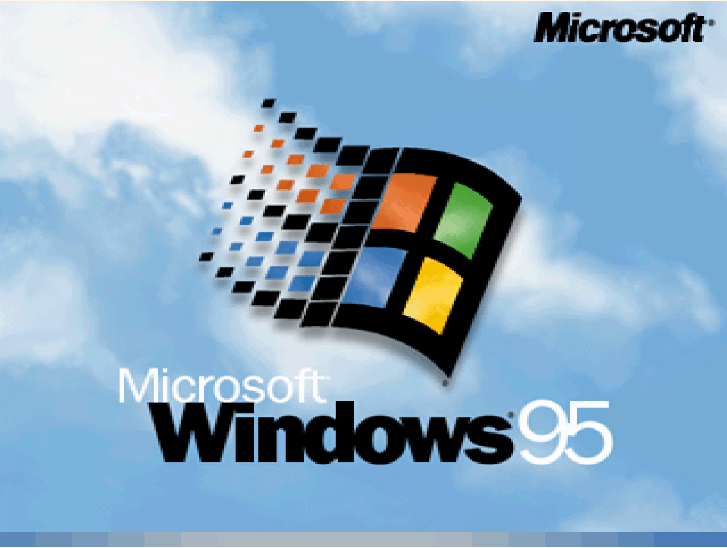
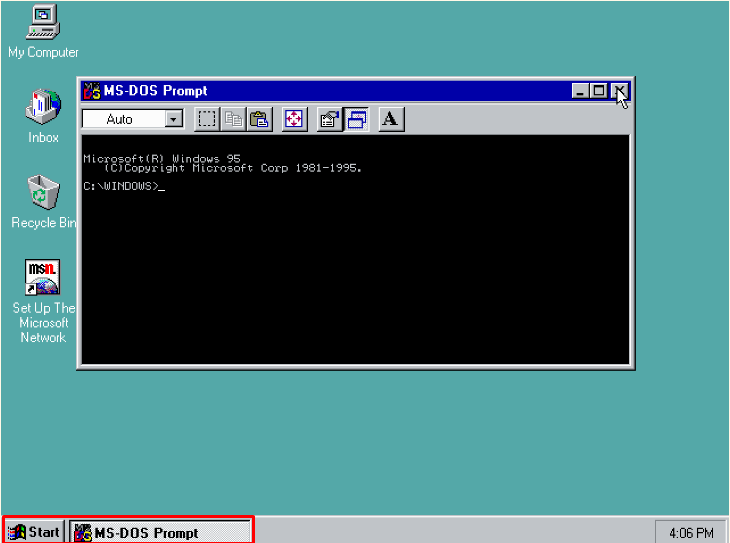
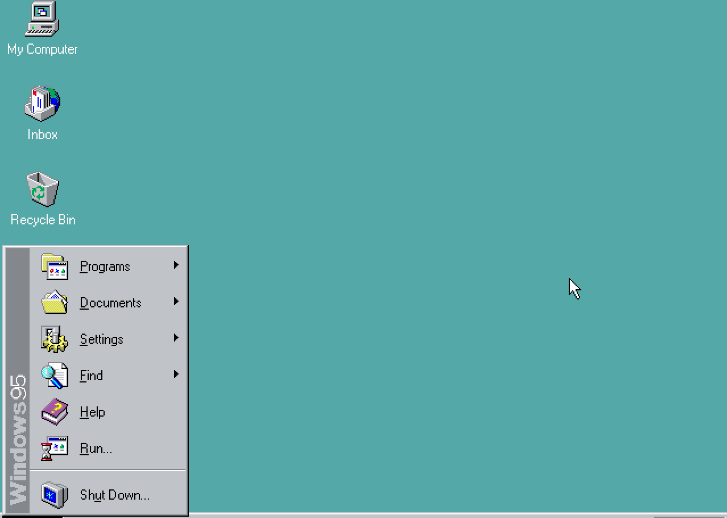
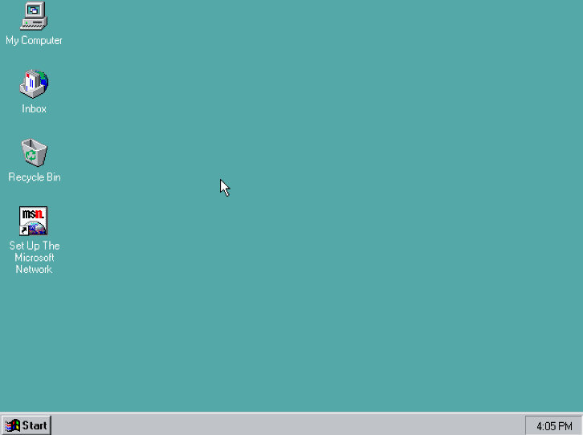
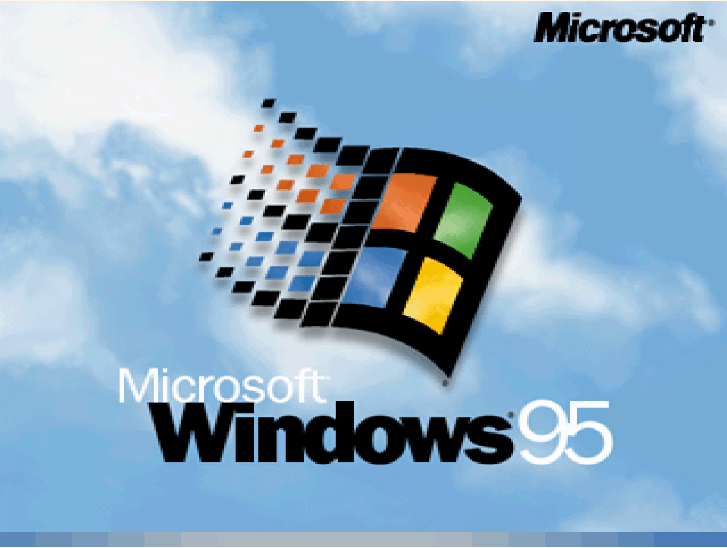
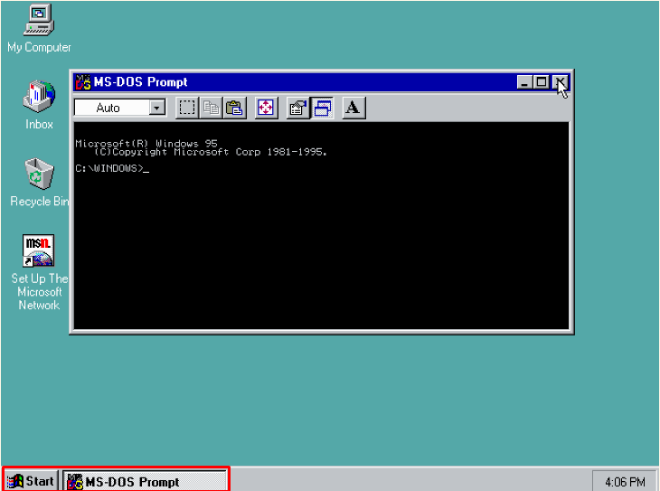
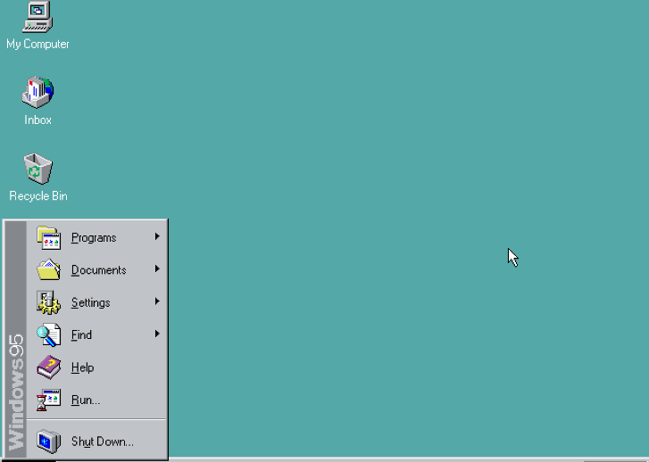
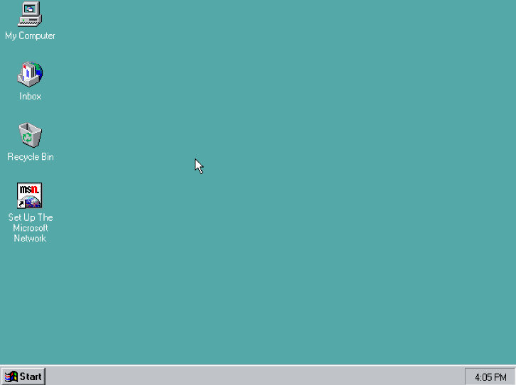

Windows 95
O Microsoft Windows 95 (codinome Chicago) é um sistema operacional de 16/32 bits criado pela empresa Microsoft. Lançado em 24 de agosto de 1995, o Windows 95 revolucionou o mercado de sistemas operacionais e passou a vir instalado por padrão com o MS-DOS 7.0 (e não mais separado, como era antes), sendo o principal lançamento da empresa na década de 1990. Entre outras coisas, efetivava o sistema de arquivos FAT-16 (ou VFAT). Os ficheiros (arquivos) puderam a partir de então ter 256 caracteres e não apenas 8 como sucedia nas versões anteriores. Os nomes longos passam a ser armazenados em uma tabela aparte, mantendo assim a compatibilidade com o MS-DOS. O salto do Windows 3.1 para o Windows 95 foi enorme e fez com que a Microsoft pulasse para ser a mais popular distribuidora de sistemas operacionais.
Um dos grandes problemas do Windows 95 era a instabilidade ao rodar aplicativos escritos para o Windows 3.x, pois o Windows 95 passava a executar a multitarefa cooperativa (exatamente como o Windows 3.x) entregando ao aplicativo o gerenciamento do processador e da memória, podendo resultar em travamentos e reinicializações do computador, caso o aplicativo executasse alguma tarefa indevida
Existe uma outra versão do Windows 95, lançada em 1996, chamada de Windows 95 OEM Service Release 2 (OSR 2), com suporte nativo ao sistema de arquivos FAT32. Já o Windows 95, a partir da revisão OSR 2.1, incluía o suporte nativo ao Barramento Serial Universal e ao Ultra DMA (veja tabela abaixo). Teve o suporte encerrado em 2002
Versões
Windows 95 Beta 1.4 - Primeira Beta do projeto Chicago a ter o nome Windows 95.
Windows 95 - Esta versão do Windows sempre foi chamada de "950 RC6" porque existiam 4 RCs candidatas a versão madura do build 950. A Release Candidate 6 foi a versão definitiva adotada oficialmente.
As versões seguintes, Windows 95 OSR1/SP1, Windows 95 OSR2, Windows 95 OSR2.1 e Windows 95 OSR2.5, não tiveram alterações significativas
Imagens
 Logo do Windows 95

Tela de início do Windows 95

Prompt de comandos do Windows 95

Menu Iniciar do Windows 95

Área de trabalho do Windows 95
Logo do Windows 95

Tela de início do Windows 95

Prompt de comandos do Windows 95

Menu Iniciar do Windows 95

Área de trabalho do Windows 95
Windows 98
Windows 98 (chamado pelo codinome Memphis, durante seu desenvolvimento) é um sistema operacional com interface gráfica desenvolvido pela Microsoft. É o segundo maior lançamento da família de sistemas operacionais Windows 9x, e é o sucessor do Windows 95. Ele foi lançado no formato RTM em 15 de Maio de 1998, e lançado em sua versão varejo em 25 de Junho de 1998.
Assim como seu antecessor, o Windows 98 é um produto com sistema híbrido com uma arquitetura de 16-bit/32-bit (x86), com seu boot baseado no MS-DOS. O Windows 98 foi sucedido pelo Windows 98 Second Edition em 5 de Maio de 1999, que posteriormente tem sido sucedido pelo Windows ME em 19 de Junho de 2000. A Microsoft encerrou o suporte regular para o Windows 98 e para o Windows 98 SE em 30 de Junho de 2002, tendo o suporte estendido existente até 11 de Julho de 2006.
A famosa música de inicialização do Windows 98 foi escrita pelo engenheiro de som da Microsoft, Ken Kato, que considerou um "feito difícil a fazer", aludindo-se ao som de inicialização do Windows 95.
Requisitos de sistema
Intel 80486DX2/66 MHz ou um processador que comporta pontos flutuantes (Um processador Pentium é recomendado
16MB de memória RAM (24 é recomendado; é possível ainda rodar o Windows 98 em máquinas de 8MB com a opção /nm usada durante o processo de instalação)
Ao menos 500MB de espaço disponível no HD. A quantidade de espaço requisitado depende do método de instalação e do tipo de componentes selecionados, mas a memória virtual e outros utilitários do sistema devem ser levados em consideração.
Upgrade do Windows 95 (FAT16) ou Windows 3.1 (FAT): 140 – 400MB (geralmente 205MB)
Nova instalação (FAT32): 140 – 255MB (tipicamente 175MB )
Monitor VGA ou de maior resolução (640x480)
Drive de CD-ROM ou DVD-ROM (a instalação por disquete é possível, mas lenta)
Mouse da Microsoft ou compatível (opcional)
Aperfeiçoamentos ao suporte de hardware
Windows Driver Model
O Windows 98 foi o primeiro sistema operacional a usar o Windows Driver Model (WDM). Este fato não foi muito bem comentado quando o Windows 98 foi lançado, e a maioria dos fabricantes continuaram a desenvolver seus drivers para o antigo padrão de drivers VxD, que no caso foi suportado pela compatibilidade do Windows 98. O padrão WDM apenas obteve aclamação anos depois, sobretudo no Windows 2000 e Windows XP, já que estes não são compatíveis com o padrão VxD.
USB
O Windows 98 tinha um suporte de USB mais robusto (por exemplo, o suporte aos USB composite devices) que o Windows 95, que apenas tinha suporte nas versões OEM (do OSR 2.1 pra cima). O Windows 98 possui suporte a hubs USB, scanners USB e dispositivos de imagem em USB.
O Windows 98 também vinha acompanhado com um suporte nativo ao USB Human Interface Device class (USB HID), dando maior suporte a teclados, mouses, e joysticks USB, incluindo funções adicionais por certo número de controles HID.
O suporte ao áudio USB está presente do Windows 98 Second Edition em diante. O Windows 98 SE possui melhor suporte ao WDM em geral para todos os dispositivos, e introduziu o suporte WDM para modems (e também para modems USB e entradas COM). O suporte para drivers para impressoras e pen drives não estava disponível para o Windows 98; o suporte real para ambos foi introduzido no Windows 2000. Não obstante, o uso de drivers genéricos estavam disponíveis por terceiros para os dispositivos USB-MSC
ACPI
O suporte ao ACPI 1.0 foi introduzido no Windows 98, que permitia o modo Standby (ACPI S3), e o modo Hibernar (ACPI S4). No entanto, o suporte para hibernação era extremamente limitado, e especifico para certos fabricantes: a hibernação só era disponível se o hardware (PnP) e a BIOS fossem compatíveis. Ainda sim, existem problemas com a hibernação no sistema de arquivos FAT32, fazendo da hibernação problemática e não confiável.